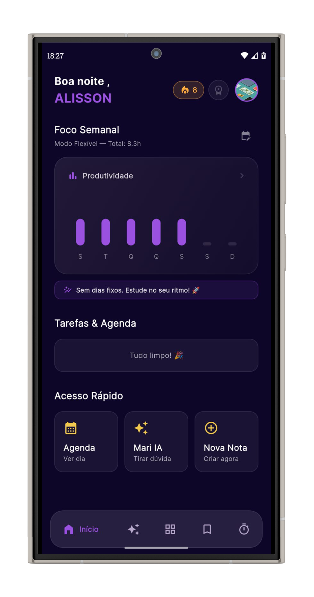

Organize suas notas, use Inteligência Artificial e domine o método Pomodoro. Tudo em um só lugar.

Tudo o que você precisa para alcançar seus objetivos acadêmicos
Tire dúvidas acadêmicas instantaneamente com nossa inteligência artificial integrada ao StudyCap.
Acesse provas dentro do aplicativo e responda às questões para praticar, revisar conteúdos e se familiarizar com o formato do exame.
Planeje matérias, atividades e sessões de estudo ao longo dos dias, criando uma visão mais organizada da sua rotina e dos seus objetivos.
Escolha como deseja visualizar suas tarefas e planejamentos. O modo lista oferece uma leitura direta, enquanto o modo tabela facilita a comparação e a organização das informações.
Separe suas anotações por matérias, anexe áudios e imagens, ou arquive conteúdos antigos para manter o foco.
Método Pomodoro com tempos customizáveis para maximizar sua produtividade diária.
Anote e marque seus compromissos, provas e prazos de entrega em um calendário intuitivo e prático.
Veja seu progresso detalhado e acompanhe suas conquistas de estudo durante todo o mês.
Seus dados salvos localmente com futura integração para acessar de qualquer lugar.
Estamos em constante evolução para oferecer o melhor para seus estudos.
Falar com Suporte